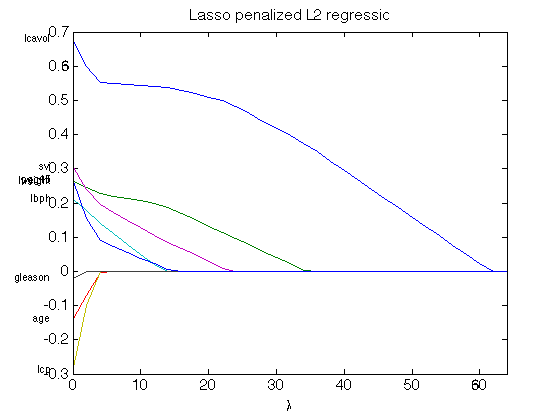
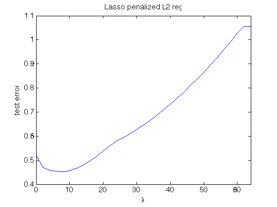
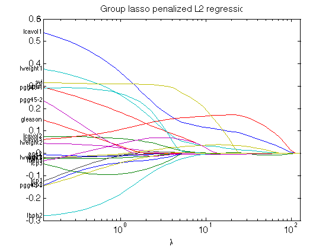
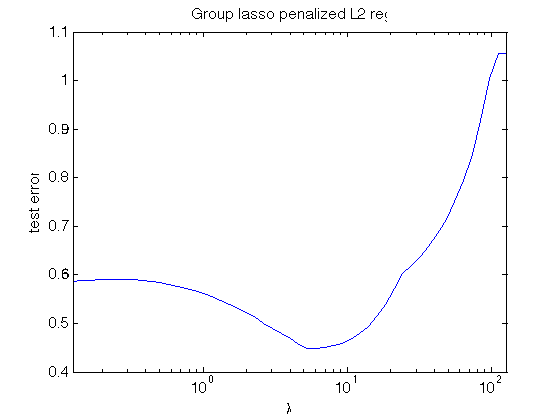
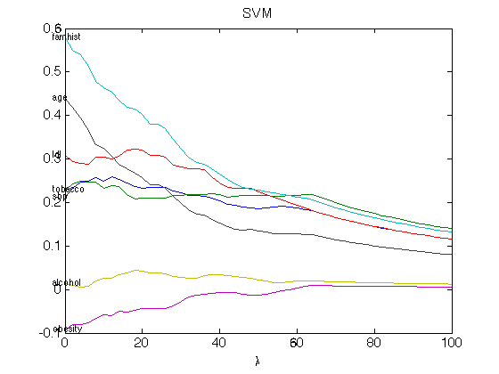
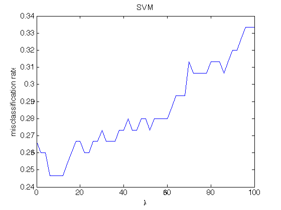
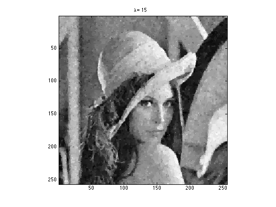
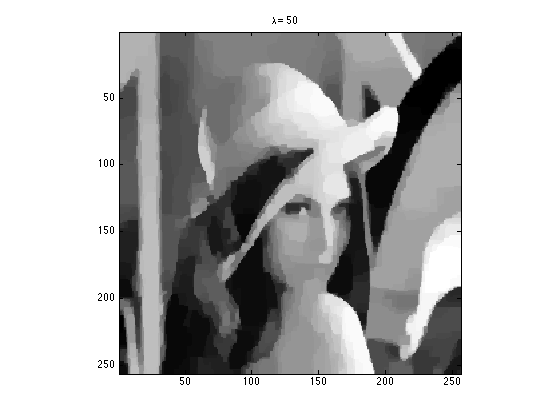

Solution Sketch to ST790 HW5
Contents
System information
cpuinfo
ans =
Name: 'Intel(R) Core(TM) i7-3720QM CPU @ 2.60GHz'
Clock: '2600 MHz'
Cache: '256 KB'
NumProcessors: 4
OSType: 'Mac OS/X'
OSVersion: '10.9.5'
Display the solver cvx is using
cvx_solver
Name Status Version Location
-----------------------------------------------------------------------------------
Gurobi 6.00 /Library/gurobi600/mac64
Mosek 7.0.0.106 {cvx}/mosek/maci64
Mosek_2 selected,default 7.0.0.134 /Users/hzhou3/mosek/7/toolbox/r2013a
SDPT3 4.0 {cvx}/sdpt3
SeDuMi 1.34 {cvx}/sedumi
Q1. Lasso regression on prostate cancer data
Load the prostate cancer data; standardize and split into train/test
clear; fid = fopen('prostate.txt'); rawdata = textscan(fid, [repmat('%f ', 1, 10) '%s'],... 'HeaderLines', 1, 'CollectOutput', true); fclose(fid); % row #, lcavol, lweight, age, lbph, svi, lcp, gleason, pgg45, lpsa, train trainidx = strcmp(rawdata{2}, 'T'); rawdata = rawdata{1, 1}; X = [ones(size(rawdata, 1), 1) rawdata(:, 2:9)]; y = rawdata(:, 10); % standardize predictors X(:, 2:end) = bsxfun(@minus, X(:, 2:end), mean(X(:, 2:end), 1)); % centering X(:, 2:end) = bsxfun(@rdivide, X(:, 2:end), std(X(:, 2:end))); % train/test split Xtr = X(trainidx, :); ytr = y(trainidx); Xte = X(~trainidx, :); yte = y(~trainidx);
Solve lasso penalized l2 regression over a grid
lambdalist = 0:2:64; bhat_path = zeros(size(Xtr, 2), length(lambdalist)); err_path = zeros(1, length(lambdalist)); tic; for i = 1:length(lambdalist) bhat_path(:, i) = lsqlasso(ytr, Xtr, lambdalist(i)); err_path(i) = norm(yte - Xte * bhat_path(:, i))^2 / length(yte); end toc; % plot solution path figure; set(gca, 'FontSize', 15); plot(lambdalist, bhat_path(2:end, :)); xlim([lambdalist(1) lambdalist(end)]); xlabel('\lambda'); title('Lasso penalized L2 regression'); predname = {'lcavol', 'lweight', 'age', 'lbph', 'svi', ... 'lcp', 'gleason', 'pgg45'}; for i = 1:length(predname) text(-3, bhat_path(i + 1, 1), predname{i}, 'HorizontalAlignment','right'); end % plot testing error figure; set(gca, 'FontSize', 15); plot(lambdalist, err_path); xlim([lambdalist(1) lambdalist(end)]); xlabel('\lambda'); ylabel('test error'); title('Lasso penalized L2 reg.');
Elapsed time is 2.777848 seconds. 
This is my function for fitting lasso regression
type lsqlasso
function [bhat] = lsqlasso(y, X, lambda, varargin) %#ok<STOUT,INUSL>
% LSQLASSO Lasso penalized least squares
% [BHAT] = LSQLASSO(y, X, lambda) finds regression coefficient bhat that
% minimizes 0.5 * norm(y - X * bhat, 2)^2 + lambda * norm(D * X, 1), where D
% is a regularization matrix. When penalty='group', it solves
% corresponding group lasso regression.
%
% INPUT:
% y - n-by-1 response vector
% X - n-by-p predictor matrix, assuming first column is intercept
% lambda - nonnegative tuning parameter
%
% OPTIONAL NAME-VALUE PAIRS:
% 'penalty' - penalty form: 'l1' (default) | 'wald' | 'score' | 'group'
% 'grouplabel' - p-by-1 group labels, intercept or unpenalized predictors
% must have group label 0
%
% OUTPUT:
% bhat - regression coefficient estimate
%
% Example
%
% References
%
% Copyright 2015 North Carolina State University
% Hua Zhou (hua_zhou@ncsu.edu)
% input parsing rule
[n, p] = size(X);
argin = inputParser;
argin.addRequired('y', @(x) isnumeric(x) && length(y)==n);
argin.addRequired('X', @isnumeric);
argin.addRequired('lambda', @(x) isnumeric(x) && x>=0);
argin.addParamValue('D', [zeros(p-1, 1) eye(p-1)], @isnumeric);
argin.addParamValue('penalty', 'l1', @ischar);
argin.addParamValue('grouplabel', 0:p-1, @isnumeric);
% parse inputs
argin.parse(y, X, p, varargin{:});
D = argin.Results.D;
penalty = argin.Results.penalty;
grplabel = argin.Results.grouplabel;
% solve lasso problem
if strcmpi(penalty, 'l1')
cvx_begin quiet
variable bhat(p)
minimize 0.5 * sum_square(y - X * bhat) + ...
lambda * norm(D * bhat, 1)
cvx_end
elseif strcmpi(penalty, 'wald')
w = sqrt(sum(X .^ 2, 1))';
w(1) = []; %#ok<NASGU> % intercept not penalized
cvx_begin quiet
variable bhat(p)
minimize 0.5 * sum_square(y - X * bhat) + ...
lambda * sum(abs(bhat(2:end) ./ w))
cvx_end
elseif strcmpi(penalty, 'score')
w = sqrt(sum(X .^ 2, 1))';
w(1) = []; %#ok<NASGU> % intercept not penalized
cvx_begin quiet
variable bhat(p)
minimize 0.5 * sum_square(y - X * bhat) + lambda * ...
sum(abs(X(:, 2:end)' * (y - X * bhat) ./ w))
cvx_end
elseif strcmpi(penalty, 'group')
grpuniq = unique(grplabel);
grpuniq(grpuniq == 0) = [];
ngrp = nnz(grpuniq); % no. of penalized groups
cvx_begin quiet
variable bhat(p)
variable t(ngrp)
minimize 0.5 * sum_square(y - X * bhat) + lambda * sum(t)
subject to
for g = 1:ngrp
grpidx = grplabel == grpuniq(g);
{sqrt(nnz(grpidx)) * bhat(grpidx), t(g)} <In> lorentz(nnz(grpidx)); %#ok<VUNUS>
end
cvx_end
else
error('unrecognized penalty');
end
end
Q2. Group lasso regression on prostate cancer data
Load the prostate cancer data; standardize and split into train/test
clear; fid = fopen('prostate.txt'); rawdata = textscan(fid, [repmat('%f ', 1, 10) '%s'],... 'HeaderLines', 1, 'CollectOutput', true); fclose(fid); % row #, lcavol, lweight, age, lbph, svi, lcp, gleason, pgg45, lpsa, train trainidx = strcmp(rawdata{2}, 'T'); rawdata = rawdata{1, 1}; X = [ones(size(rawdata, 1), 1) rawdata(:, 2:9)]; y = rawdata(:, 10); % add quadratic and cubic terms to continuous predictors X(:, 2:end) = bsxfun(@minus, X(:, 2:end), mean(X(:, 2:end), 1)); % centering X(:, 2:end) = bsxfun(@rdivide, X(:, 2:end), std(X(:, 2:end))); % scaling Xaug = [X(:, 1) ... % intercept X(:, 2) X(:, 2).^2 X(:, 2).^3 ... % lcavol, lcavol^2, lcavol^3 X(:, 3) X(:, 3).^2 X(:, 3).^3 ... % lweight, lweight^2, lweight^3 X(:, 4) X(:, 4).^2 X(:, 4).^3 ... % age, age^2, age^3 X(:, 5) X(:, 5).^2 X(:, 5).^3 ... % lbph, lbph^2, lbph^3 X(:, 6) ... % svi X(:, 7) X(:, 7).^2 X(:, 7).^3 ... % lcp, lcp^2, lcp^3 X(:, 8) ... % gleason X(:, 9) X(:, 9).^2 X(:, 9).^3 ... % pgg45, pgg^2, pgg^3 ]; grplabel = [0 1 1 1 2 2 2 3 3 3 4 4 4 5 6 6 6 7 8 8 8]; % train/test split Xtr = Xaug(trainidx, :); ytr = y(trainidx); Xte = Xaug(~trainidx, :); yte = y(~trainidx);
Solve group lasso over a grid
lambdalist = 2.^(-3:0.2:7); bhat_path = zeros(size(Xtr, 2), length(lambdalist)); err_path = zeros(1, length(lambdalist)); tic; for i = 1:length(lambdalist) bhat_path(:, i) = lsqlasso(ytr, Xtr, lambdalist(i), 'penalty', 'group', ... 'grouplabel', grplabel); err_path(i) = norm(yte - Xte * bhat_path(:, i))^2 / length(yte); end toc; % plot solution path figure; set(gca, 'FontSize', 15); semilogx(lambdalist, bhat_path(2:end, :)); xlim([lambdalist(1) lambdalist(end)]); xlabel('\lambda'); title('Group lasso penalized L2 regression'); predname = {'lcavol1', 'lcavol2', 'lcavol3', ... 'lweight1', 'lweight2', 'lweight3', 'age1', 'age2', 'age3', ... 'lbph1', 'lbph2', 'lbph3', 'svi', 'lcp1', 'lcp2', 'lcp3', 'gleason', ... 'pgg45-1', 'pgg45-2', 'pgg45-3'}; for i = 1:length(predname) text(lambdalist(1), bhat_path(i + 1, 1), predname{i}, 'HorizontalAlignment','right'); end % plot testing error figure; set(gca, 'FontSize', 15); semilogx(lambdalist, err_path); xlim([lambdalist(1) lambdalist(end)]); xlabel('\lambda'); ylabel('test error'); title('Group lasso penalized L2 reg.');
Elapsed time is 8.087965 seconds. 
Q3. Support vector machine (SVM) on South African heart disease data
Read in SA heart data
clear; fid = fopen('saheart.txt'); rawdata = textscan(fid, [repmat('%f ', 1, 5) '%s ' repmat('%f ', 1, 6)],... 'HeaderLines', 1, 'CollectOutput', true); fclose(fid); rawdata = [rawdata{1,1} cellfun(@(s) strcmp(s,'Present'),rawdata{1, 2}), ... rawdata{1, 3}]; % sbp, tobacco, ldl, famhist, obesity, alcohol, age X = rawdata(:,[2 3 4 6 8 9 10]); X = bsxfun(@minus, X, mean(X, 1)); % centering X = bsxfun(@rdivide, X, std(X)); % standardize X = [ones(size(X,1), 1), X]; y = rawdata(:, end - 1); trainidx = logical(rawdata(:, end)); % train/test split Xtr = X(trainidx, :); ytr = y(trainidx); Xte = X(~trainidx, :); yte = y(~trainidx); % fit logistic reg. and make sure the results match that in ESLII p126 Fig 4.13 b0 = glmfit(Xtr, ytr, 'binomial','constant','off'); display(b0); % change 0/1-valued y to -1/1-valued class labels ctr = 2 * ytr - 1; cte = 2 * yte - 1;
b0 =
-0.8640
0.2767
0.3088
0.3690
0.5044
-0.1116
0.0892
0.6316
Solve svm over a grid
lambdalist = 0:2:100; bhat_path = zeros(size(Xtr, 2), length(lambdalist)); err_path = zeros(1, length(lambdalist)); tic; for i = 1:length(lambdalist) lambda = lambdalist(i); bhat_path(:, i) = svm(Xtr, ctr, lambda); err_path(i) = nnz(cte ~= sign(Xte * bhat_path(:, i))) / length(cte); end toc; % plot solution path figure; set(gca, 'FontSize', 15); plot(lambdalist, bhat_path(2:end, :)); xlabel('\lambda'); title('SVM'); predname = {'sbp', 'tobacco', 'ldl', 'famhist', 'obesity', 'alcohol', 'age'}; for i = 1:length(predname) text(lambdalist(1)-3, bhat_path(i + 1, 1), predname{i}, ... 'HorizontalAlignment','left'); end % plot testing error figure; set(gca, 'FontSize', 15); plot(lambdalist, err_path); xlabel('\lambda'); ylabel('misclassification rate'); title('SVM'); % This is my function for fitting svm type svm
Elapsed time is 4.274059 seconds.
function [bhat] = svm(X, y, lambda, varargin)
% SVM Support vector machine
% [BHAT] = SVM(X, y, p) finds regression coeffcients bhat that minimize
% sum_pos(1 - y .* (X * bhat)) + lambda * sum_square(bhat(2:end)).
%
% INPUT:
% X - n-by-p predictor matrix, first column should be intercept
% y - n-by-1 class labels taking values -1 or 1
% lambda - nonnegative scalar
%
% OPTIONAL NAME-VALUE PAIRS:
%
% OUTPUT:
% bhat - p-by-1 regression coefficents
%
% Example
%
% References
%
% Copyright 2015 North Carolina State University
% Hua Zhou (hua_zhou@ncsu.edu)
% input parsing rule
[n, p] = size(X);
argin = inputParser;
argin.addRequired('X', @isnumeric);
argin.addRequired('y', @(x) isnumeric(x) && length(y)==n);
argin.addRequired('lambda', @(x) isnumeric(x) && x>=0);
% parse inputs
argin.parse(X, y, lambda, varargin{:});
cvx_begin quiet
variable bhat(p)
minimize sum(pos(1 - y .* (X * bhat))) + lambda * sum_square(bhat(2:end))
cvx_end
end
  Q4. Denoise Lena
load in Lena and add noise
clear; lena = imread('lena.png'); display(size(lena)); % shrink to 256*256 lena256 = imresize(lena, [256 256]); figure; imagesc(lena256); colormap(gray); axis equal; axis tight; % % Generate noisy Lena % rng(2015790); % lena256noisy = double(lena256) + normrnd(0, 30, size(lena256)); % figure; % imagesc(lena256noisy); colormap(gray); % axis equal; % axis tight; % imwrite(uint8(lena256noisy), 'lena256noisy.png');
ans = 512 512
Load in the noisy Lena
lena_noisy = imread('lena256noisy.png'); figure; imagesc(lena_noisy); colormap(gray); axis equal; axis tight;
De-noise by anisotropic regularization at various lambdas and display result
lambdalist = [5 15 50]; figure; set(gca, 'FontSize', 15); imagesc(lena_noisy); colormap(gray); title('\lambda = 0'); axis equal; axis tight; for i = 1:length(lambdalist) tic; lena_denoise = tvreg(lena_noisy, lambdalist(i)); toc; figure; imagesc(lena_denoise); colormap(gray); title(['\lambda = ' num2str(lambdalist(i))]); axis equal; axis tight; end % %% % % De-noise by ROF regularization at various lambdas and display result. % % It takes forever! % lambdalist = [5 15 50]; % % figure; hold on; % set(gca, 'FontSize', 15); % subplot(1, length(lambdalist)+1, 1); % imagesc(lena_noisy); colormap(gray); % title('\lambda = 0'); % axis equal; % axis tight; % % for i = 1:length(lambdalist) % tic; % lena_denoise = tvreg(lena_noisy, lambdalist(i), 'penalty', 'ROF'); % toc; % subplot(1, length(lambdalist)+1, i + 1); % imagesc(lena_denoise); colormap(gray); % title(['\lambda = ' num2str(lambdalist(i))]); % axis equal; % axis tight; % end
Elapsed time is 14.083561 seconds. Elapsed time is 12.761181 seconds. Elapsed time is 13.539480 seconds. 
This is my function for fitting total variation image denoiser
type tvreg
function [X] = tvreg(image, lambda, varargin)
% TVREG Denoising by anisotropic total variation regularization
% [BHAT] = tvreg(image, lambda) finds X that minimizes
% 0.5 * norm(X - image, 2)^2 + lambda * norm(D * X, 1), where D is the
% anisotropic smoothing matrix.
%
% INPUT:
% image - m-by-n image matrix
% lambda - nonnegative tuning parameter
%
% OPTIONAL NAME-VALUE PAIRS:
% penalty - 'anisotropic' (default) | 'ROF'
%
% OUTPUT:
% X - m-by-n de-noised image
%
% Example
%
% References
%
% Copyright 2015 North Carolina State University
% Hua Zhou (hua_zhou@ncsu.edu)
% get dimensions
[m, n] = size(image);
argin = inputParser;
argin.addRequired('image', @isnumeric);
argin.addRequired('lambda', @(x) x >= 0);
argin.addParameter('penalty', 'anisotropic', @(x) ischar(x));
% parse inputs
argin.parse(image, lambda, varargin{:});
penalty = argin.Results.penalty;
% solve the TV regularization problem
Y = double(image); %#ok<NASGU>
if strcmpi(penalty, 'anisotropic')
cvx_begin quiet
variable X(m, n)
minimize (0.5 * sum_square(X(:) - Y(:)) + ...
lambda * (norm(vec(X(1:end-1, :) - X(2:end, :)), 1) + ...
norm(vec(X(:, 1:end-1) - X(:, 2:end)), 1))) %#ok<*NODEF>
cvx_end
% % This takes forever!
% cvx_begin quiet
% variables X(m, n) t(m, n)
% minimize 0.5 * sum_square(X(:) - Y(:)) + lambda * sum(t(:))
% subject to
% for j = 1:n
% for i = 1:m
% if i < m && j < n
% abs(X(i, j) - X(i+1, j)) + abs(X(i, j) - X(i, j+1)) <= t(i, j);
% elseif i == m && j < n
% abs(X(i, j) - X(i, j+1)) <= t(i, j);
% elseif i < m && j == n
% abs(X(i, j) - X(i+1, j)) <= t(i, j);
% else
% t(i, j) == 0;
% end
% end
% end
% cvx_end
elseif strcmpi(penalty, 'ROF')
% This takes forever!
cvx_begin quiet
variables X(m, n) t(m, n)
minimize 0.5 * sum_square(X(:) - Y(:)) + lambda * sum(t(:))
subject to
for j = 1:n
for i = 1:m
if i < m && j < n
norm([X(i, j) - X(i+1, j), X(i, j) - X(i, j+1)]) <= t(i, j); %#ok<*VUNUS>
elseif i == m && j < n
abs(X(i, j) - X(i, j+1)) <= t(i, j);
elseif i < m && j == n
abs(X(i, j) - X(i+1, j)) <= t(i, j);
else
t(i, j) = 0; %#ok<*AGROW>
end
end
end
cvx_end
else
error('unrecognozied penalty term');
end
end